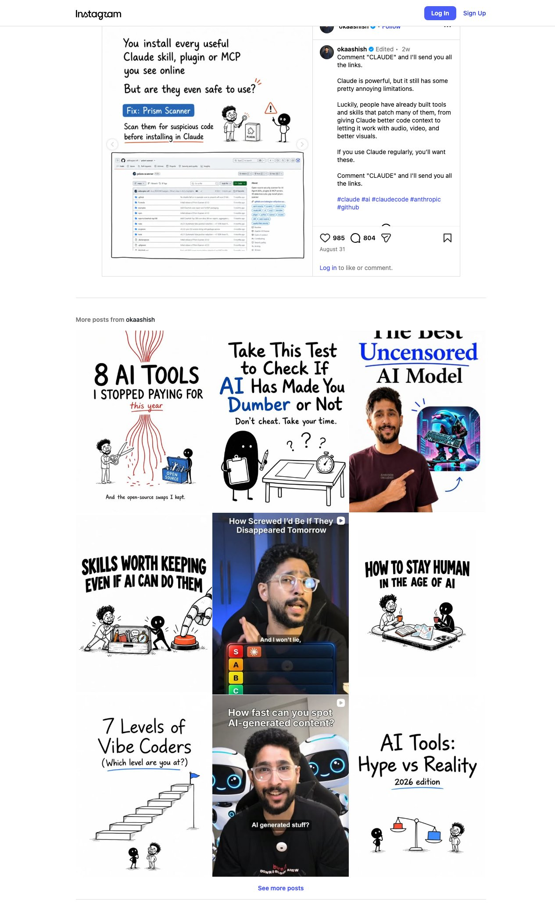
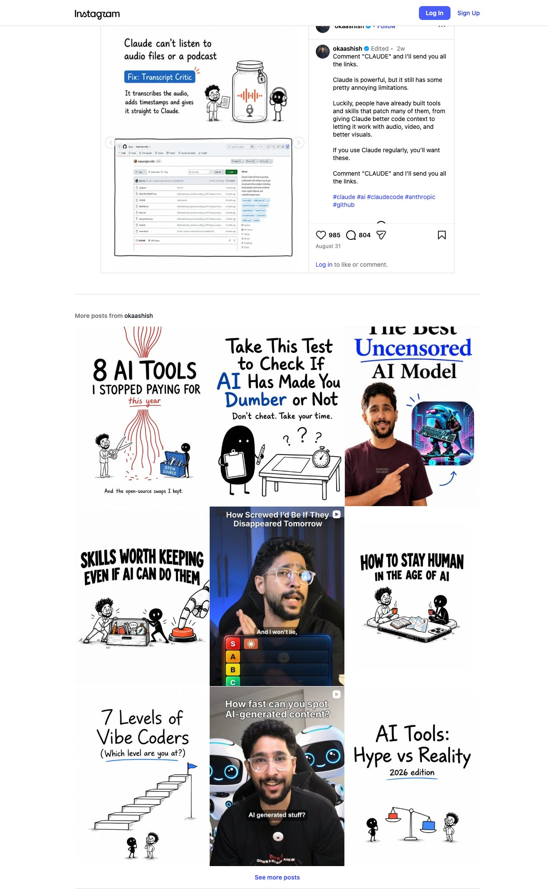
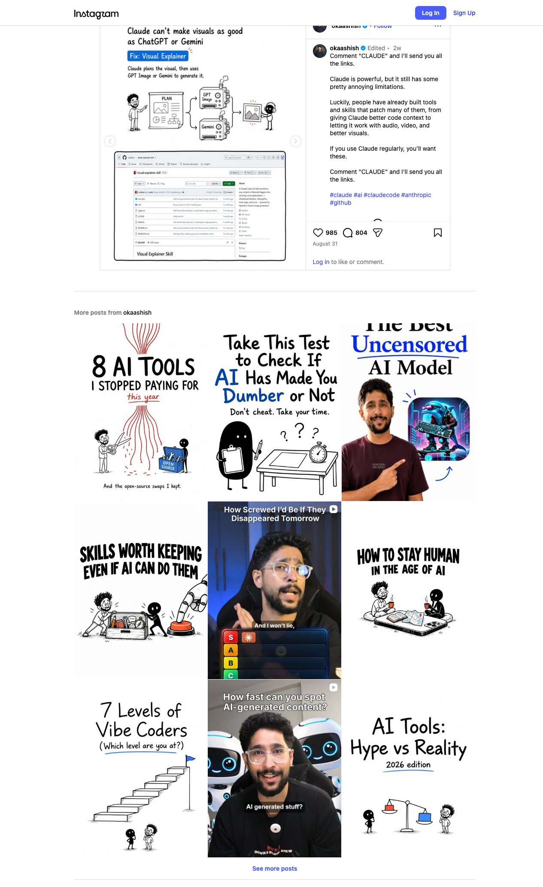
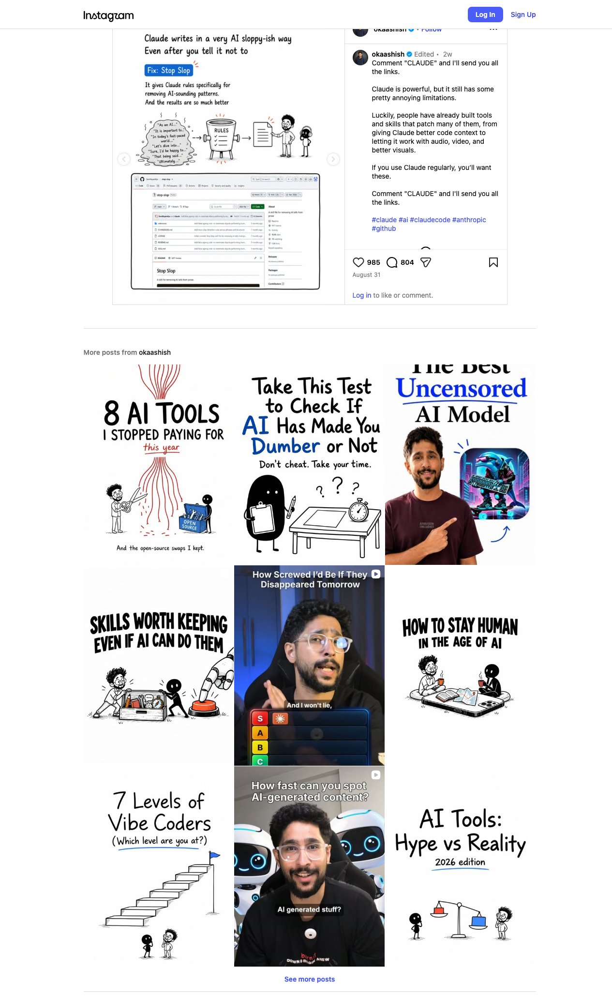
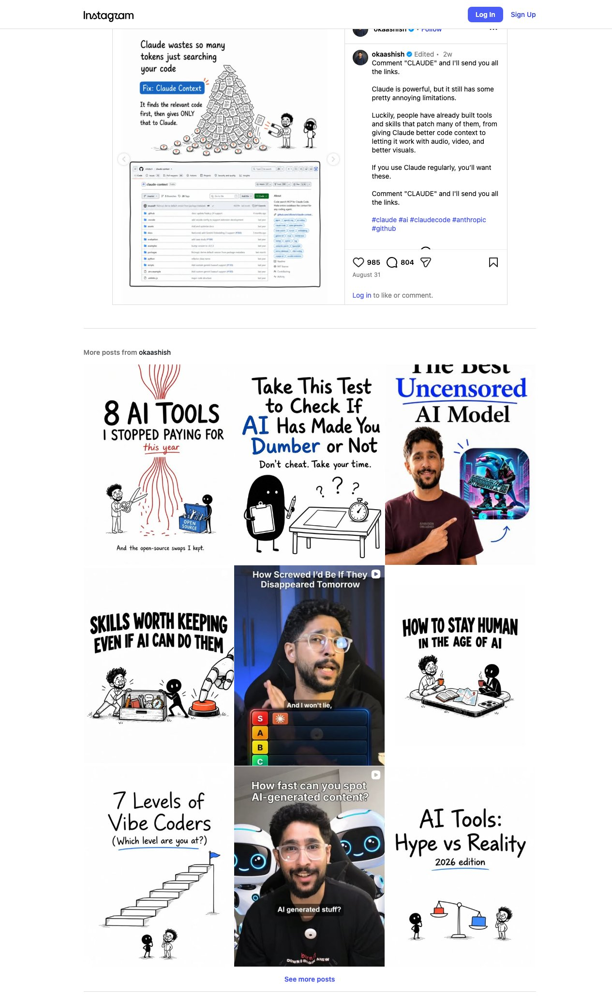
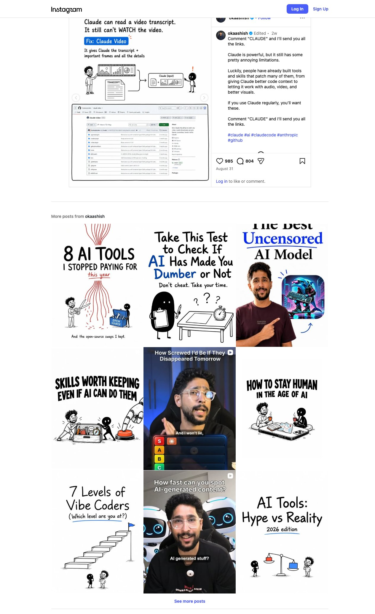
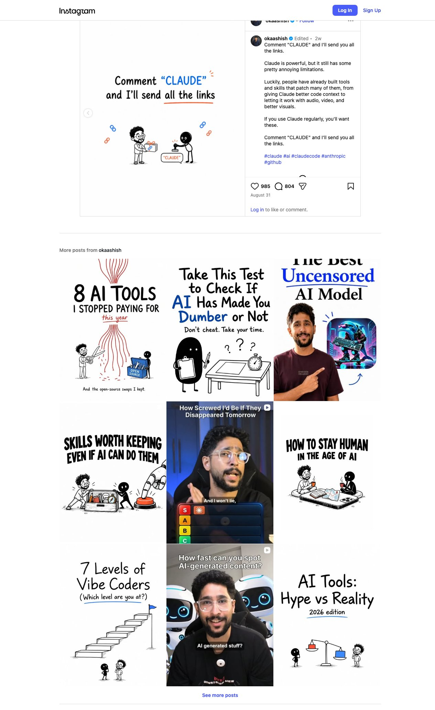

Instagram Post
7 Biggest Claude Problems & How to Fix Them
carousel (9 slides) (enriched by ClaudeClaw)
Summary
7 Biggest Claude Problems & How to Fix Them | 7 Biggest Claude Problems & How to Fix Them | You install every useful Claude skill, plugin or MCP you ... | Claude can't listen to audio files or a podcast Fix: Tran... | Claude can't make visuals as good as ChatGPT or Gemini Fi... | Claude writes in a very AI sloppy-ish way Even after you ... | You have to manually update Claude skills Fix: Self-I...
1
7 Biggest Claude Problems & How to Fix Them
A cartoon infographic on a white background features the title "7 Biggest Claude Problems & How to Fix Them" with an orange starburst, two thoughtful cartoon characters, a toolbox, and seven circular icons representing various problems.
2
7 Biggest Claude Problems & How to Fix Them
A cartoon illustration depicts two figures, one with glasses and a beard, and a black stick figure, standing by a toolbox, with seven problem icons above them, and the title '7 Biggest Claude Problems & How to Fix Them'.
3
You install every useful Claude skill, plugin or MCP you see online But are they even safe to use? Fix: Prism Scanner Scan them for suspicious code before installing in Claude PLUGIN aidongise
4
Claude can't listen to audio files or a podcast Fix: Transcript Critic It transcribes the audio, adds timestamps and gives it straight to Claude. jftuga / transcript-critic Code
5
Claude can't make visuals as good as ChatGPT or Gemini Fix: Visual Explainer Claude plans the visual, then uses GPT Image or Gemini to generate it. PLAN GPT Image Gemini eric
6
Claude writes in a very AI sloppy-ish way Even after you tell it not to Fix: Stop Slop It gives Claude rules specifically for removing AI-sounding patterns. And the results are so much better "As an AI..." "It is important to..." "In today's fast-paced world..." "Let's dive into..." "Sure, I'd be happy to..." "That being said..." "Ultimately..." RULES hardikpandya / stop-slop Code Issues 26 Pull requests 23 Actions Projects Security and quality Insights stop-slop Public main 1 Branch 0 Tags Go to file Watch 70 Fork 1.2k Star 16.6k Add file Code About A skill file for removing AI tells from prose hardikpandya and claude Add false agency rule: no inanimate objects performing huma... 8da1f03 5 months ago 12 Commits Readme MIT license references Add false agency rule: no inanimate objects performing hum... 7 months ago CHANGELOG.md Add more slop detection rules across phrases and structures 7 months ago LICENSE Initial commit: Stop Slop skill file for removing AI tells from pr... 7 months ago README.md Add false agency rule: no inanimate objects performing hum... 5 months ago SKILL.md Add false agency rule: no inanimate objects performing hum... 5 months ago Readme MIT license Stop Slop A skill for removing AI tells from prose. Activity 16.6k stars 70 watching 1.2k forks Report repository Releases No releases published Packages No packages published Contributors 3
7
You have to manually update Claude skills Fix: Self-Improving Skills It learns from your sessions and updates your skills automatically for next time. SKILL v1.0 MANUAL UPDATE SKILL v1
8
Claude wastes so many tokens just searching your code Fix: Claude Context It finds the relevant code first, then gives ONLY that to Claude. T T T T T T T T T
9
Claude can read a video transcript. It still can't WATCH the video. Fix: Claude Video It gives Claude the transcript + important frames and all the details TRANSCRIPT Claude (input
All slides






